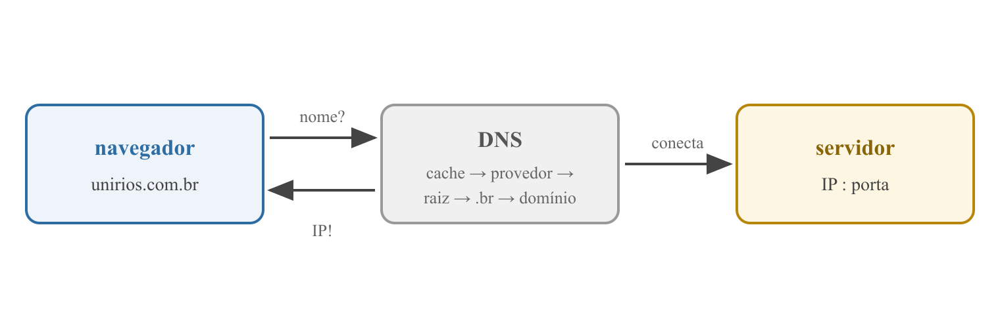
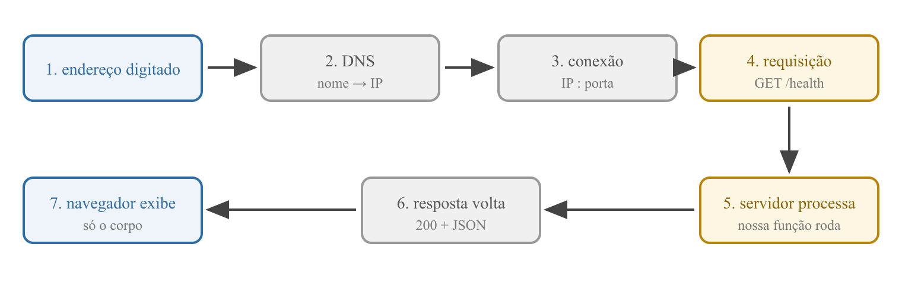
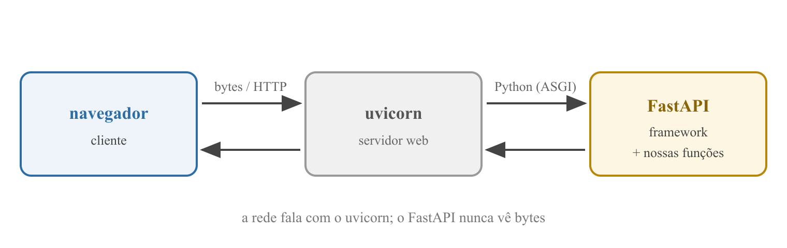

Programação Avançada — Aula 02
Universidade Unirios
projeto/backend/main.py
from fastapi import FastAPI
app = FastAPI()
@app.get("/health")
def read_root():
return {"status": "Ok"}
Digitamos http://127.0.0.1:8000/health e apareceu um JSON.
E, antes de ir embora: path e query params, o Swagger e o primeiro recurso da API: Books.
unirios.com.br é um nome — bom para humanos;KUROSE; ROSS. Computer Networking: A Top-Down Approach, 2021

Como a agenda do celular: você toca no nome, o telefone descobre o número — só então liga.
RFC 1034 / RFC 1035 — Domain Names, IETF, 1987 · KUROSE; ROSS, 2021
127.0.0.1 já é um IP — nenhuma consulta DNS acontece;:8000 é a porta: identifica qual programa dentro da máquina;Dois programas na porta 8000? O segundo falha: "address already in use".
.br → domínio;127.0.0.1 é loopback: a requisição fica em casa.
GET /health HTTP/1.1
Host: 127.0.0.1:8000
User-Agent: Mozilla/5.0 (Macintosh; ...)
Accept: */*
GET = "me dê") + caminho + versão;RFC 9110 — HTTP Semantics, IETF, 2022
HTTP/1.1 200 OK
server: uvicorn
content-type: application/json
content-length: 15
{"status":"Ok"}
content-type avisa "o corpo é JSON" — por isso o navegador exibe formatado;RFC 9110 — HTTP Semantics, IETF, 2022
| Família | Significado | Exemplos de hoje |
|---|---|---|
| 2xx | Deu certo | 200 OK |
| 3xx | Vá para outro lugar | redirecionamentos |
| 4xx | O cliente pediu errado | 404, 422 |
| 5xx | O servidor quebrou | 500 |
No restaurante: 404 = prato fora do cardápio (culpa da mesa); 500 = a cozinha pegou fogo.
RFC 9110 — HTTP Semantics, IETF, 2022

É este ciclo que dá nome à aula — e ele acontece em todo site que você abre.
KUROSE; ROSS. Computer Networking: A Top-Down Approach, 2021
Com o servidor rodando (uvicorn main:app --reload):
http://127.0.0.1:8000/health;Repare no server: uvicorn e no content-type: application/json.
MDN Web Docs — developer.mozilla.org
Mac
curl -i http://127.0.0.1:8000/health
curl -v http://127.0.0.1:8000/health
Windows (PowerShell)
curl.exe -i http://127.0.0.1:8000/health
curl.exe -v http://127.0.0.1:8000/health
-i mostra status e headers antes do corpo;-v mostra as duas direções: > requisição, < resposta.curl sem .exe é apelido de outro comando — use curl.exe.Acesse http://127.0.0.1:8000/nada:
HTTP/1.1 404 Not Found
{"detail":"Not Found"}
/nada — o FastAPI responde sozinho;No nosso projeto, esse programa é o uvicorn.
KUROSE; ROSS. Computer Networking: A Top-Down Approach, 2021

Especificação ASGI — asgi.readthedocs.io
app;server: uvicorn nos headers é ele se identificando;--reload é serviço do uvicorn: ele vigia os arquivos e reinicia a aplicação;Quem está no comando quando rodamos uvicorn main:app? Eles. Nosso código só roda quando chega requisição — a inversão de controle da aula 01.
Especificação ASGI — asgi.readthedocs.io
Nossas rotas respondem sempre a mesma coisa — sistemas reais recebem dados. Na URL, eles viajam em dois lugares:
chave=valor depois do ?, separados por &: ajustam o pedido.
github.com/torvalds/linux
└─ path: identifica o usuário e o repositório
google.com/search?q=fastapi
└─ query: q é o termo buscado
youtube.com/watch?v=9bZkp7q19f0&t=42
└─ dois query params: o vídeo (v) e o segundo inicial (t)
Por que o termo buscado do Google vai na query, e não no caminho?
| Path param | Query param | |
|---|---|---|
| Onde | no caminho | depois do ? |
| Papel | identifica qual recurso | filtra, configura, ajusta |
| Obrigatório? | sempre | em geral opcional, com default |
A anatomia completa da URI (esquema, host, porta…) vem na aula 03.
MDN Web Docs — developer.mozilla.org · DevSheets. FastAPI Cheat Sheet — devsheets.io/sheets/fastapi
@app.get("/health")
def read_health():
return {"status": "Ok"}
read_root → read_health: nada mudou;@app.get("/health");
books = [
{"id": 1, "name": "Dom Casmurro"},
{"id": 2, "name": "O Hobbit"},
{"id": 3, "name": "Clean Code"},
]
/api: quando o React chegar, API e tela não se misturam.
@app.get("/api/books")
def list_books():
return books
from fastapi import FastAPI, HTTPException
@app.get("/api/books/{book_id}")
def read_book(book_id: int):
for book in books:
if book["id"] == book_id:
return book
raise HTTPException(status_code=404, detail="Book not found")
{book_id} do caminho vira o argumento da função — mesmo nome, obrigatório, tipado (int);/api/books/abc → 422: validação de graça, nossa função nem rodou;/api/books/99 → 404 com mensagem nossa.Documentação oficial do FastAPI — fastapi.tiangolo.com · DevSheets. FastAPI Cheat Sheet — devsheets.io/sheets/fastapi
@app.get("/api/books")
def list_books(name: str = ""):
if name == "":
return books
return [book for book in books if name.lower() in book["name"].lower()]
name não está no caminho → query param: /api/books?name=hobbit;"" → opcional: sem ele, lista tudo como antes;.lower() dos dois lados ignora maiúsculas.Documentação oficial do FastAPI — fastapi.tiangolo.com · DevSheets. FastAPI Cheat Sheet — devsheets.io/sheets/fastapi
http://127.0.0.1:8000/docs
Em produção muitas equipes restringem o /docs; aqui ele fica aberto — é ferramenta de ensino.
Documentação oficial do FastAPI — fastapi.tiangolo.com
@app.post("/api/books", status_code=201)
def create_book(book: dict):
new_book = {"id": len(books) + 1, "name": book["name"]}
books.append(new_book)
return new_book
201 Created — direto da tabela de status codes de hoje;book: dict é cru, sem validação (POST sem name → 500!) — o Pydantic fecha esse buraco na aula 03;
## Endpoints
| Método | Rota | O que faz |
| ------ | ---- | --------- |
| GET | /health | Verifica se a API está no ar |
| GET | /api/books | Lista os livros; query param opcional name |
| GET | /api/books/{book_id} | Um livro pelo id (404 se não existir) |
| POST | /api/books | Cria um livro na lista em memória |
O README conta o estado do projeto — ele cresce junto com o código.
GET /repeat/{word} com query param times (inteiro, padrão 2);word, times e result — a palavra repetida (dica: "la" * 3 é "lalala");Consulta rápida: devsheets.io/sheets/fastapi — seções Path Parameters e Query Parameters.
Hoje o recurso Books nasceu — mas fizemos tudo no instinto.